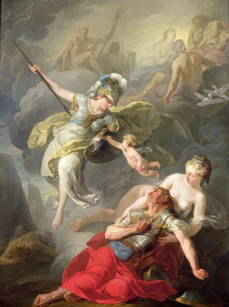
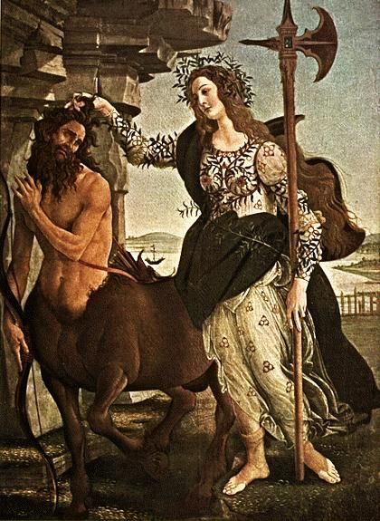
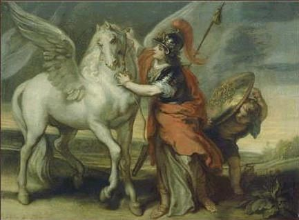
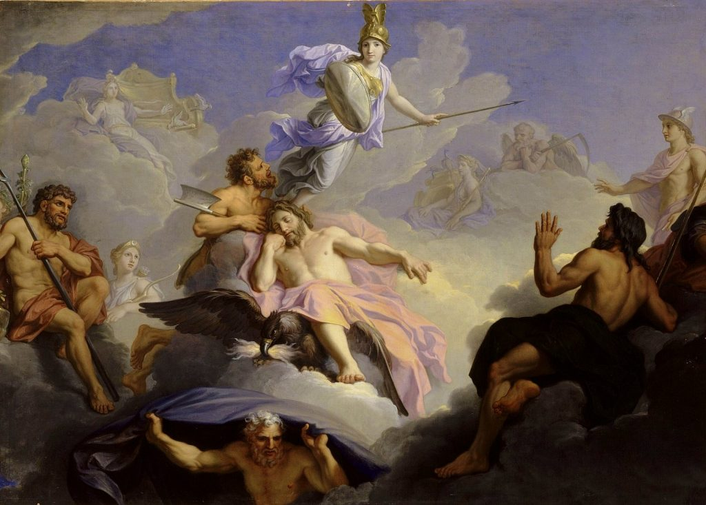
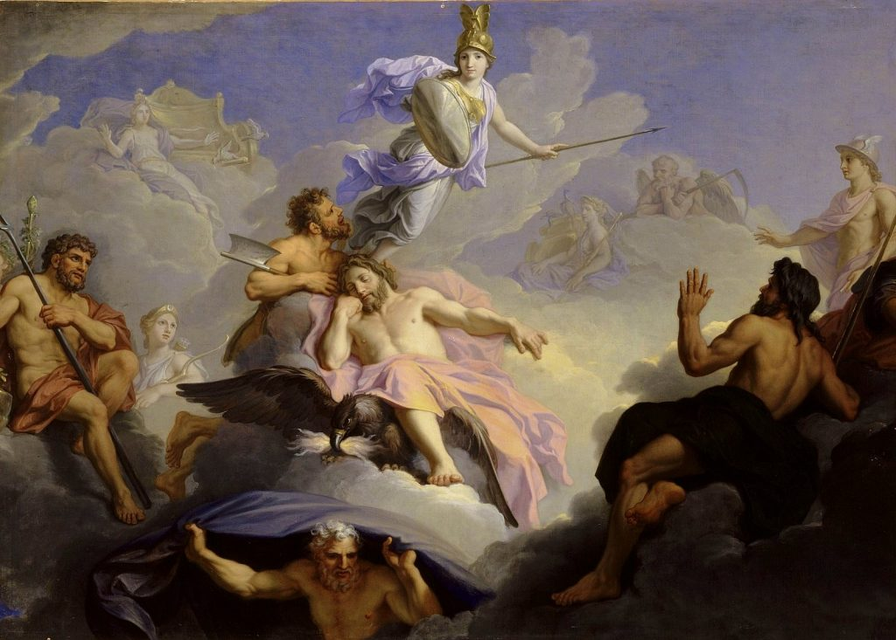
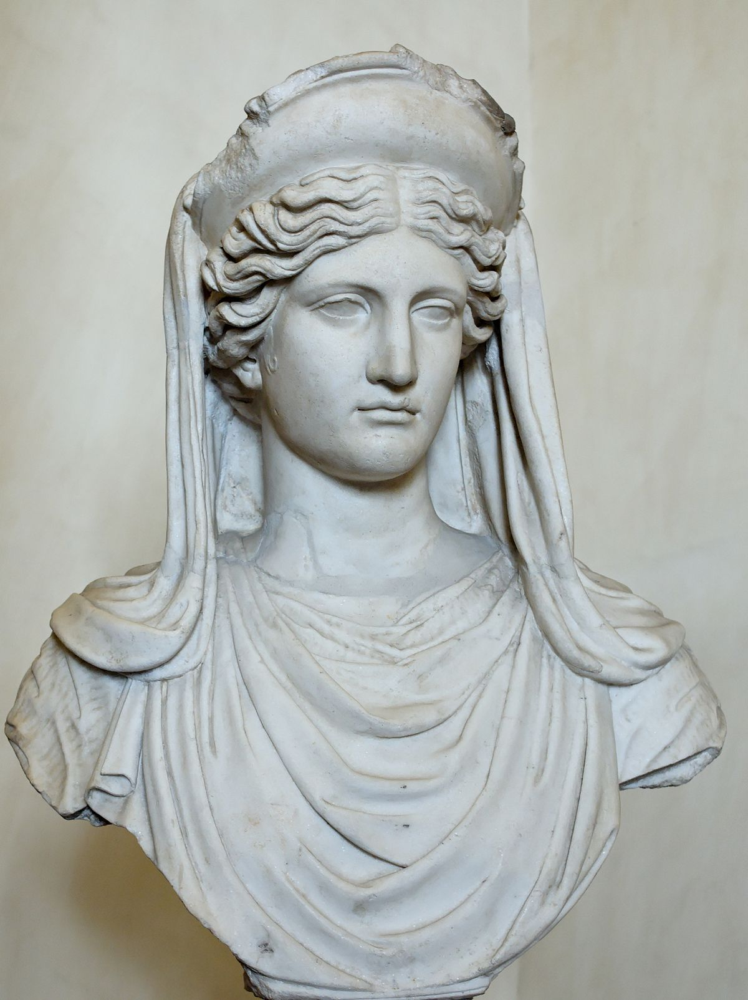

Atenea
Introducción
Atenea, también conocida como Minerva en la mitología romana, era una de las diosas griegas más importantes y presentaba un gran número de rasgos característicos. Era la diosa de la guerra, de la sabiduría y de la ciencia, además de ser patrona de diversas actividades, entre ellas, el arte de tejer. El valor era el rasgo más característico de Atenea. Su figura alta y delgada siempre estaba acompañada por el casco y la lanza. Un búho que simbolizaba su sabiduría solía acompañarla a todos los sitios. De hecho, esta figura aparece en gran cantidad de monedas estampadas en Atenas.
  
Atenea no ama la guerra por sí misma, sino solo por las ventajas que ganaba el estado al emprenderla, y por tanto solo apoya aquellas empresas bélicas que se iniciaban con prudencia y que probablemente arrojaran resultados favorables. Como diosa prudente de la guerra también era la protectora de todos los héroes que se distinguieron por su prudencia y buenos consejos, así como por su fuerza y valor, como Heracles, Perseo, Belerofonte, Aquiles, Jasón, Diomedes y Odiseo.
Nacimiento
Zeus embarazó a Metis. Los abuelos de Zeus le advirtieron "Los hijos que concibirá Metis serán más poderosos que tú". Para impedir tan graves consecuencias, siguió el consejo de Gea y Urano y «la encerró en su vientre». Tiempo después, a Zeus le dolía demasiado la cabeza, y le pidió a su hijo Hefestos que le diera un hachazo en la misma, éste lo hizo y, en presencia de Ilitía, Atenea salió de la cabeza de Zeus, adulta y completamente armada.
 

Algunos mitos
Atenas
Atenea compitió con Poseidón para ver quien sería señor o señora de una ciudad sin nombre ni dios adorado en especifico. Se acordó que cada uno le diera un regalo a los habitantes y el que prefirieran los habitantes le daba la victoria al Dios que lo había hecho. Poseidón golpeó el suelo con su tridente y de él broto un fuente. La fuente era muy buena, pero tenía agua salada, por lo que no les servía mucho. Atenea en cambio ofreció el olivo, algo que antes no existía, lo adoraron tanto que declararon a Atenea la vencedora, y la ciudad llevó su nombre, Atenas.
Medusa
Medusa era originalmente una hermosa doncella sacerdotisa del templo de Atenea, pero cuando fue violada por Poseidón, en el mismo templo, la enfurecida diosa, no pudiendo
desquitarse con el señor del mar, transformó a la joven, para parecerse a sus hermanas, en monstruo con piel de reptil y con cabello en serpientes.

No pudo hacerla inmortal, puesto que para eso requería ser una virgen,
entonces en cambio le dio una mirada petrificante. Medusa huyó a la cueva de sus hermanas gorgonas, monstruosas de nacimiento, donde se refugió.Muchos héroes se atrevieron a meterse en la cueva de las gorgonas, mas nadie
salió nunca, algunos devorados por Euríale o Esteno, otros petrificados por la mirada de Medusa. Perseo, quien aseguró volver con vida y con la cabeza de Medusa, fue enviado por el rey Polidectes de Sérifos a cumplir la
misión. Con la ayuda de Atenea y Hermes, que le dieron las sandalias aladas, el casco de invisibilidad de Hades, una espada y un escudo espejado, el héroe fue a visitar las Grayas para que le dijeran donde se encontraba
la cueva de las gorgonas.
Perseo cumplió su misión, evadió a las hermanas de medusa con el casco, y decapitó a la gorgona acercándose a ella sin mirarla directamente sino observando el reflejo de la gorgona en el escudo
para evitar quedar petrificado. Su mano iba siendo guiada por Atenea y así cortó su cabeza. Medusa estaba embarazada de Poseidón, y al ser decapitada, de su sangre salieron Pegaso y Crisaor. Después de todas sus aventuras,
Perseo le dio la cabeza a Atenea, quien la colocó en su escudo. La diosa le dio la sangre mágica de Medusa al médico Asclepio, pues la que manaba del lado izquierdo del cuello era un veneno mortal, y la del lado derecho
tenía el poder de resucitar a los muertos.